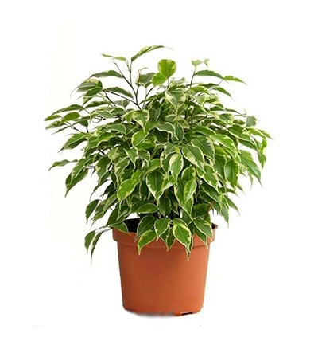
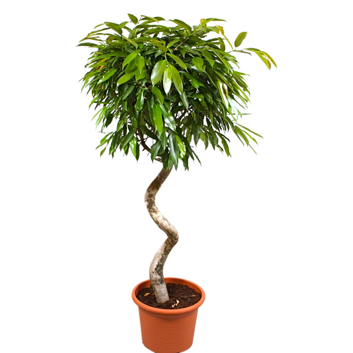
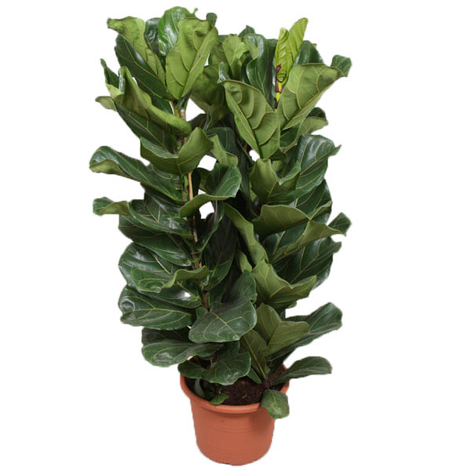
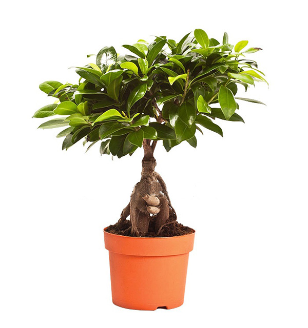
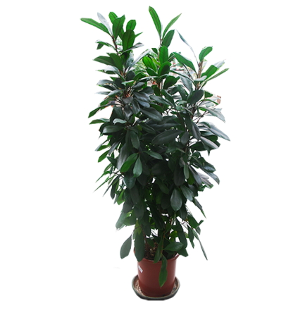
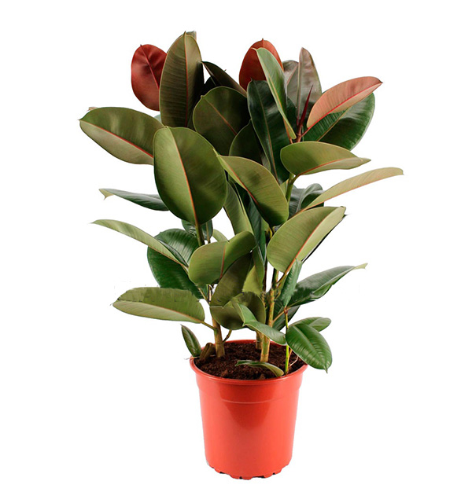

|

Фикус Бенджамина - Может находится как в затемненном, - Растение не любит «переезжать» - Фикус не терпит частого полива, |

Фикус Биннедика - Холод и сквозняки губительны - Для усиления устойчивости фикуса - Поливать фикус нужно |

Фикус Лирата - Не допускайте прямых солнечных лучей - Оберегайте фикус от резких - Обеспечьте обильный полив, |
|

Фикус Микрокарпа - Содержание в полутени - Недопустимость холода и сквозняков - Умеренный полив, без пересыхания почвы. |

Фикус Циатистипула - Фикус считается одним |

Фикус Эластика - Яркий рассеянный свет более предпочтителен - Температура от +15 до +25 градусов - Полив просохшей почвы. |